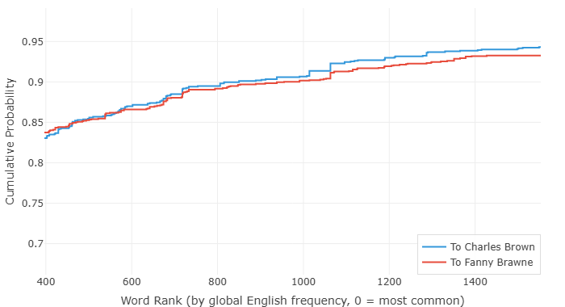

The Last Letters of John Keats — What the Sentences Tell Us
John Keats died in Rome on February 23, 1821. He was twenty-five years old. His grave in the Protestant Cemetery bears no name, only the words he asked for: "Here lies one whose name was writ in water."
In the final two years of his life, Keats wrote many letters. We gathered two sets of them. The first set — three letters written to Fanny Brawne, the woman he loved with a desperation that bordered on illness. The earliest, from July 1819, pulses with adoration: "Your Letter gave me more delight, than any thing in the world but yourself could do." By February 1820, the tone has shifted — he is already sick, already writing about what might happen "If I should die."
The second set — two letters and a short postscript written to his friend Charles Brown in late 1820, from the ship to Italy and then from Rome. These are farewell letters. The tuberculosis is terminal. He is leaving England, leaving Fanny, leaving everything. He writes to Brown: "I wish for death every day and night to deliver me from these pains, and then I wish death away, for death would destroy even those pains which are better than nothing." And later, the line that has echoed through two centuries: "I can bear to die — I cannot bear to leave her."
These two sets of letters were written by the same hand, to two people he loved, roughly a year apart. But they were written by two different men — or rather, by the same man at two different moments in the arc of a life. One still in love, still hoping. The other already leaving.
We ran both sets through the Writing Style Analyzer. What the data shows is quiet, precise, and very sad.
The Love Letters: Sentences That Refuse to End

Look at the two curves. The love letters to Fanny — the line that lags to the right — are made of long, winding sentences. These are not Faulknerian experiments in syntax. They are the sentences of a man who cannot bear to stop talking to the woman he loves. Every clause opens into another. Every period is postponed. The writing is breathless because the writer is breathless — not from disease, not yet, but from longing.
In the July 1819 letter, Keats wrote: "Even when I am not thinking of you I receive your influence and a tenderer nature steeling upon me. All my thoughts, my unhappiest days and nights have I find not at all cured me of my love of Beauty, but made it so intense that I am miserable that you are not with me." That is one sentence. It never stops. It keeps surging forward, the dashes and commas functioning not as grammar but as places where he paused to catch his breath before plunging back in.
The sentence length curve captures this perfectly: the love letters stretch out, keep going, refuse the finality of a short sentence. A short sentence would mean the thought is finished, and he does not want the thought to be finished.
Contrast this with the farewell letters to Brown. Their curve rises much faster, hugging the left edge — the sentences are shorter, more direct, more final. This is the writing of a man who no longer has the energy for elaboration, and no longer needs it. When every word might be your last, you choose them differently. The gap between these two curves is the distance between "I cannot exist without you" and "I feel my time is very short" — between reaching out and letting go.
The Vocabulary of Love and the Vocabulary of Farewell

The vocabulary chart shows a subtler difference. The love letters use a slightly richer, more varied vocabulary — the curve runs a touch to the right, meaning Keats reached for less common words more often. This makes sense. The July 1819 letters were written in relative health, when his mind could still range freely. Love, too, demands a larger vocabulary: you need words for desire, for hope, for the thousand shades of feeling between joy and despair.
The farewell letters show a more constrained vocabulary — not impoverished, but more centered on the common words of everyday speech. When you are dying, you do not reach for the rare word. You say what needs to be said in the clearest language you have. Keats wrote to Brown: "I have an habitual feeling of my real life having past, and that I am leading a posthumous existence." That is still a beautiful sentence. But the words are simple. Habitual. Feeling. Life. Past. Existence. Each one common, each one carrying the full weight of meaning without ornament. And yet, even here, one line breaks through all restraint — "Oh, God! God! God! Every thing I have in my trunks that reminds me of her goes through me like a spear." The vocabulary of a dying man is simple, but it is never weak.
The two curves are closer than the sentence length chart. This, too, feels right. The same mind wrote both sets of letters. The same vocabulary lived in both. What changed was not his linguistic range but his relationship to time. When there is time, sentences stretch out and words wander. When time is running out, sentences shorten and words go straight.
An Invitation
Keats' letters to Fanny and to Brown are in the public domain. You can find them online in minutes. If this post has moved you at all, I would encourage you to read the full letters — not just the data about them, but the letters themselves. The charts show you the shape of a man's heart as it breaks and then stops. But the words themselves are worth your time.
He was twenty-five. His name, he thought, was writ in water. He was wrong about that.